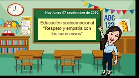

Articulo 1
"buenos modales"
La buena educación es una materia que todo el mundo debe aprender desde pequeño para ponerla en práctica a lo largo de toda la vida.
Saber saludar...
Saber presentarse...
Saber hablar...
Saber escuchar...
Saber vestirse adecuadamente...
Ser puntual...
Ser respetuoso...
Ser cordial y amable...

Articulo 2
"empatia"
La empatía se considera como una habilidad práctica de la inteligencia emocional, esto quiere decir que las emociones de los demás resuenan en nosotros, o sea, que podemos llegar a entender lo que sienten y por eso ellos perciben en nosotros un aliado, un apoyo, alguien que les comprende sin juzgarlos y es capaz de ver las cosas desde su punto de vista. Incluso a veces es posible experimentar las emociones de los demás como si fueran propias.
